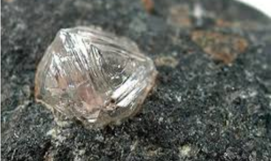
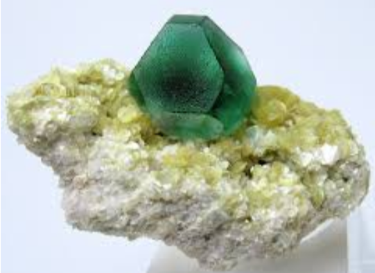

In order for a mineral crystal to grow, the elements needed to make it must be present in the appropriate proportions, the physical and chemical conditions must be favourable, and there must be sufficient time for the atoms to become arranged.

Physical and chemical conditions include factors such as temperature , pressure , presence of water , pH , and amount of oxygen available. Time is one of the most important factors because it takes time for atoms to become ordered. If time is limited, the mineral grains will remain very small. The presence of water enhances the mobility of ions and can lead to the formation of larger crystals over shorter time periods.Most of the minerals that make up the rocks around us formed through the cooling of molten rock, known as magma. At the high temperatures that exist deep within Earth, some geological materials are liquid. As magma rises up through the crust, either by volcanic eruption or by more gradual processes, it cools and minerals crystallize. If the cooling process is rapid (minutes, hours, days, or years), the components of the minerals will not have time to become ordered and only small crystals can form before the rock becomes solid. The resulting rock will be fine-grained (i.e., crystals less than 1 mm). If the cooling is slow (from decades to millions of years), the degree of ordering will be higher and relatively large crystals will form. In some cases, the cooling will be so fast (seconds) that the texture will be glassy, which means that no crystals at all form. Volcanic glass is not composed of minerals because the magma has cooled too rapidly for crystals to grow, although over time (millions of years) the volcanic glass may crystallize into various silicate minerals.
Minerals can also form in several other ways:

Opal is a mineraloid, because although it has all of the other properties of a mineral, it does not have a specific structure. Pearl is not a mineral because it can only be produced by organic processes.